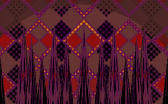

- Welcome to Touhou Wiki!
- Please register to edit. For assistance, check in with our Discord server or IRC channel.
Hell
Hell d͡ʑiɡ̃o̞kɯᵝ New Hell[1][2] | |
|---|---|
|
 The Rotting World of Flames of Hell as seen in Highly Responsive to Prayers
| |
| Location |
|
| Residents |
|
Appearances | |
| Official Games | |
| |
| Print Works | |
| |
Hell (地獄 Jigoku), also New Hell (新地獄 Shin Jigoku)[1][2], is a collection of realms seperate from Gensokyo where sinful souls are imprisoned.[2] It is not to be confused with Former Hell, the previous location of Gensokyo's own Hell, or Makai, a similarly hellish realm filled with demons.
General Information[edit]
Hell is a collection of realms of the afterlife where one's soul is condemned to be imprisoned and tortured. Each world has it's own Hell and every Hell is managed by a coalition of yama and kishin called The Ministry of Right and Wrong. Hell is one of many realms of the afterlife one may go to after being judged by a yama at Higan, with the other two major realms being Heaven and the Netherworld.
Basis[edit]
Japanese mythology's Hell (地獄 Jigoku lit. "Earth Prison") is based on the Chinese mythological realm of the same name, pronounced "Diyu" and is not to be confused with the Shinto underworld, Yomi. The Hell of China and Japan was based on a mixture of tradtional pre-Buddhist beliefs and the Buddhist concept of Naraka, itself being based on the Hindu Naraka. In Japan's tradition, souls must cross the Sanzu River to be judged at Higan. Souls are judged by ten judges known as the Ten Kings of Hell and are accordingly sent to whatever realm their lives' actions deserved. The main paths of the afterlife one may be sent to are called the Six Realms. Hell is the lowest realm, being succeeded by the Preta Realm, Animal Realm, Human Realm, Asura Realm and Deva Realm, also known as Heaven. There are many Hells within Hell in Buddhism, with each having a specialized torture suited for every particular kind of sinner. One's time in Hell, as in the other five realms, is not eternal, however. It may take many millennia but souls eventually burn up all their negative karma and are reincarnated in a new realm, as is the eternal cycle of Samsara.
Gensokyo's Hell[edit]
Gensokyo's Hell was originally located in the Underworld, in what is now called Former Hell. At an unknown time (possibly before the events of Embodiment of Scarlet Devil), Gensokyo's Hell moved into a new location due to over-population. Rin Kaenbyou stated that she's lived in Former Hell ever since it really was Hell.[4] Because of the existence of Former Hell, the Gensokyo's current Hell is sometimes referred to as "New Hell".[1][2] The New Hell is now located beyond Higan.[3]
Gensokyo's current yama is a former Jizo statue named Eiki Shiki.[5] Shinigami, who serve yama, are also known to operate in Hell and guide and explain the afterlife's details to the souls who are unfamiliar with its workings[6] Unlike the Netherworld, Hell is smaller,[7] but apparently extremely spacious.[8] It is also desolate and far from being calm.[9] A wide array of torture devices are used to torture sinful souls, but there are current economic conditions that left many of these contraptions in serious need of maintenance and repair.[5]
Hell's facilities naturally must be expanded in order to accommodate the increasing population.[10] However, due to financing issues, Hell has reached the point where it could no longer sustain itself merely from the ferrying fees levied on the departed.[11] Thus, the primary sources of income are fares from those crossing the River Sanzu, as well as concession stands and food carts operating on the Road of Liminality in an attempt to earn some more money.[5][11] Hell can receive some money even from both the dead who aren't going there and from the living. However, those who run the stands are all criminals who were sentenced to Hell, so it's said many fall victim to their tricks. But as soon as they're discovered, they're sent back to Hell. It is also known that Komachi Onozuka's boat was supplied to her by Hell so she could cross the River Sanzu, but it's still old and worn due to finance issues.[10]
Process[edit]
Once a soul has finally made it across the Road of Liminality and the River Sanzu to Higan, they'll wait there to be judged. Once they've been finally judged by the yama and are sent to Hell, the soul will fall outside the cycle of reincarnation temporarily. On their journey, the kishin chiefs will take charge as the souls fall down to Hell and will command the lesser oni to torment them.[5] Komachi Onozuka mentions that the oni of Hell are disciplined and injustices is quite rare, while the oni of Former Hell have too many close relationships with the ghosts of sinners, making them forgo their jobs Hell and choosing to stay in Former Hell.[12] Every hundred years, assassins from Hell will come to the surface to try and assassinate impious hermits and celestials. This is because extending life past normal mortality is considered a sin. It's necessary for those extending their lives to perform pious acts to compensate for it.[13] This happened to Seiga Kaku in Wild and Horned Hermit chapter 12, where a kishin chief named Suiki was sent to assassinate her.
In order to avoid going to Hell in the afterlife, one must simply not commit sin during their life. Even committing suicide will send you to Hell.[14] Even in her free time, Eiki has an habit of lecturing people in the hopes that they will change for the better so she won't have to send them to Hell, as shown in Phantasmagoria of Flower View. It's suggested from the game that even though you've sinned, you can still redeem yourself by changing your lifestyle, thus not going to Hell. Eiki says that Hell doesn't exist to punish sinners, but to ensure that nobody sins.[15]
Yuyuko Saigyouji's ability to manipulate departed souls enables her to control ghosts and spirits, making her able to let those from Hell stay eternally in the Netherworld. However, Yuyuko could also send a soul from the Netherworld to Hell by commanding her servant Youmu Konpaku to sever the circle of transmigration with her sword, sending it back to Higan, making it very likely that the soul will go to Hell.[7]
According to Hecatia Laspislazuli, Hell wasn't always a place that served to rehabilitate human criminals. It was originally created by people unaccustomed to living virtuously, people with hearts of pure evil, and valorous people who seek true freedom, and was meant to be a place for them to live however they wanted, with no concept of being a bother to others. Things like the Lake of Blood or the Sea of Fire were used for personal pleasures like drinking and roasting meat rather than as a punishment. This changed when the yama and kishin took over, trying to create order in such a chaotic world, saying they'd bring Hell back to its former glory. Despite this, Hell continues to be what can be considered a world of pure freedom run by an absolutely meritocratic system, where it doesn't matter who one is as long as they have the power to back it up, making it possible for even fairies to become important if they get the job done. Likewise, this also makes it possible for even kishin to become irrelevant with just one failure.[16]
Other Hells[edit]
Non-Gensokyo Hells[edit]
According to Hecatia Lapislazuli's official profile in Legacy of Lunatic Kingdom, she is the Goddess of Hell and there's a Hell for Earth, the Moon and the Otherworlds, and she governs all of them, being at the top of the Ministry of Right and Wrong. Not much is known about these Hells. She holds a grudge against Chang'e because her husband, Houyi, shot down her suns, taking away the light Hell needs to exist, because without it, there would be no shadows and the place would become weak. Fairies are known to be found anywhere and Hell is not an exception. They, along with Clownpiece, originally come from Earth's Hell and were, under Hecatia's orders, immigrated to the Sea of Tranquility on the Moon in order to threaten the Lunar Capital. The Capital then temporarily became a fairy paradise that was said to be more comfortable than Hell, suggesting how awful the environment in Hell is. These fairies were transformed into pure lifeforce by Junko in order to accomplish this. According to Clownpiece, these refined fairies' energies exceeds even that of a kishin.[17]
Hell in the PC-98 Series[edit]
Hell is also present the PC-98 gamesn but due to the canonicity between the PC-98 and the Windows era, it's unclear if the Hell is the same as the current Gensokyo's Hell. A gate is located not far from the Hakurei Shrine that leads to Hell. Within Hell, there is Hokora[18] (祠), a place that's presumably where Mima originated as a vengeful spirit. There is also the Rotting World of Flames[18] (炎の腐界 Honoo no Fukai) where Kikuri appears, and the Silent Temple[18] (静かなる神殿 Shizukanaru Shinden) where Konngara resides.
In Lotus Land Story, Reimu Hakurei mentions about chasing Yuuka Kazami to the depths of Hell, while Yuuka says that she's not from Hell. It's unknown which Hell they're referring to.
Hell's Appearances[edit]
PC-98 Games[edit]
- Highly Responsive to Prayers
Hell first appeared in Highly Responsive to Prayers and it is one of the main locations of the game. Reimu Hakurei discovered a portal that had opened in her shrine. A being from either here or Makai came and destroyed the Hakurei Shrine, so Reimu has to go out and put a stop to their reckless nature. After beating the boss SinGyoku on Stage 5, the player will then decide which route to take: Makai or Hell. If they chose Hell, then the rest of the game will occur through here. Stages 6-10 takes place at Hokora, where the boss of Stage 10 is Mima. Once she is defeated, Reimu shall now go through the Rotting World of Flames on Stages 11-15. The Stage 15 boss is Kikuri, who is some sort of a moon disk that will try and put a stop to Reimu. Once she is defeated, Reimu will spend the final 5 stages at the Silent Temple, where she'll meet Konngara, the Final Boss, who must be defeated in order to clear the game.
Additional Information[edit]
- Even though a vast amount of information is provided about Hell that's spread throughout the Touhou Project, it was not given a centred article in Perfect Memento in Strict Sense.
- The dragon god can come to Hell any time he wants.[19]
- Sakuya Izayoi suggests that Makai is scarier than Hell,[20] and Remilia Scarlet claims that not even the fires of Hell could burn her body,[21] even though she's a vampire.
- Hieda no Akyuu once worked for the yama for a hundred years in Hell when one of her next reincarnations was preparing.[22]
- It should be noted that recurringly in the Touhou Project, primarily in Subterranean Animism, various characters will make use of the proper noun "Hell" when they actually mean "Former Hell". This was pointed out by Akyuu in Symposium of Post-mysticism Part 4.[2]
See Also[edit]
References[edit]
- ↑ 1.0 1.1 1.2 Touhou Hisoutensoku: Suika's Script
- ↑ 2.0 2.1 2.2 2.3 2.4 Symposium of Post-mysticism: Part 4
- ↑ 3.0 3.1 Japanese Wikipedia: 幻想郷
- ↑ 4.0 4.1 Subterranean Animism: Reimu and Suika's Scenario
- ↑ 5.0 5.1 5.2 5.3 Perfect Memento in Strict Sense: Yama's article
- ↑ Perfect Memento in Strict Sense: Shinigami's article
- ↑ 7.0 7.1 Perfect Memento in Strict Sense: Yuyuko's article
- ↑ Symposium of Post-mysticism: Satori's article
- ↑ Perfect Memento in Strict Sense: Netherworld's article
- ↑ 10.0 10.1 Perfect Memento in Strict Sense: Komachi Onozuka's article
- ↑ 11.0 11.1 Perfect Memento in Strict Sense: Road of Liminality's article
- ↑ Touhou Hisoutensoku: Komachi's Script
- ↑ Perfect Memento in Strict Sense: Hermit's article
- ↑ Bohemian Archive in Japanese Red: Hakugyokurou
- ↑ Phantasmagoria of Flower View: Marisa's Scenario
- ↑ Alternative Facts in Eastern Utopia - Interview with Hecatia Lapislazuli
- ↑ Legacy of Lunatic Kingdom: Reisen's Scenario. It is currently unknown if Earth's Hell is the same as Gensokyo's Hell.
- ↑ 18.0 18.1 18.2 Highly Responsive to Prayers: Endings
- ↑ Perfect Memento in Strict Sense: Dragon's article
- ↑ Perfect Cherry Blossom: Sakuya's Extra Scenario
- ↑ Strange and Bright Nature Deity: Chapter 15
- ↑ Perfect Memento in Strict Sense: Monologue